Día 1
Datos y organización general
En primer lugar, es importante recordar que la organización es clave cuando se está generando un nuevo código. En este sentido, le recomendamos que cree una carpeta para cada nuevo proyecto. Puede hacer esto como un proyecto de Rstudio si lo desea (consulte Archivo> Nuevo proyecto) o simplemente como una carpeta. Dentro de esta carpeta, cree una carpeta de datos donde guardará sus datos sin procesar. Puede almacenar algunos objetos intermedios en otra subcarpeta. También cree una carpeta para su código R y una carpeta para guardar sus figuras.
Caso de estudio
Durante el curso utilizaremos datos descargados de la plataforma GBIF, los cuales han sido filtrados y organizados por los instructores del curso. Las tablas contienen los registros de mamíferos de Colombia por especie y localidad obtenidos mediante el uso de cámaras trampa y especímenes de colección. Todos los registros duplicados han sido eliminados. Estos datos deben utilizarse únicamente durante el curso y no son confiables para el desarrollo de análisis más robustos.
Primero, cargaremos los datos usando un la función read_csv() que se encuentra en un paquete incluido en tidyverse llamado readr. Aunque existen otras funciones como read.csv(), hemos decidido utilizar read_csv() ya que realiza comprobaciones adicionales sobre la estructura de los datos. Además, esta función imprime por defecto las columnas en forma de resumen. Veamos cómo:
dat<-read_csv("canidae_records.csv") # ajuste la ruta al archivo si se requiereRevise el entorno global Global Environment, en donde ahora debe aparecer un objeto en la memoria llamado “dat”. Este objeto es la tabla que contiene registros de cánidos para Colombia.
Revisión inicial de los datos
Una vez que la tabla esté cargada en el entorno global, es necesario hacer algunas verificaciones iniciales de los datos. Hay algunas funciones clave en R que nos permiten ver los datos de diferentes maneras. Es probable que estas funciones se conviertan en una rutina estándar en sus scripts, pues le ayudarán a determinar si sus datos están formateados correctamente.
Primero, verificaremos el tipo de datos de cada una de las variables en nuestra tabla de datos. Tome un tiempo para entender cada una de estas variables.
head(dat)# A tibble: 6 x 9
ID class species year latit~1 longi~2 basis~3 taxon~4 count
<chr> <chr> <chr> <dbl> <dbl> <dbl> <chr> <dbl> <dbl>
1 CT_1 Mammalia Cerdocyo~ 2021 4.38 -75.1 HUMAN_~ 2434584 1
2 CT_2 Mammalia Cerdocyo~ 2021 6.83 -73.7 HUMAN_~ 2434584 2
3 CT_3 Mammalia Cerdocyo~ 2021 6.73 -73.9 HUMAN_~ 2434584 1
4 CT_4 Mammalia Cerdocyo~ 2021 4.72 -74.0 HUMAN_~ 2434584 1
5 CT_5 Mammalia Cerdocyo~ 2021 9.87 -75.2 HUMAN_~ 2434584 1
6 CT_6 Mammalia Cerdocyo~ 2021 3.74 -177. HUMAN_~ 2434584 2
# ... with abbreviated variable names 1: latitude, 2: longitude,
# 3: basisOfRecord, 4: taxonKeytail(dat)# A tibble: 6 x 9
ID class species year latit~1 longi~2 basis~3 taxon~4 count
<chr> <chr> <chr> <dbl> <dbl> <dbl> <chr> <dbl> <dbl>
1 SV_1794 Mammalia Speoth~ NA 7.58 -75.4 HUMAN_~ 2434444 2
2 SV_1795 Mammalia Speoth~ NA 7.18 -75.8 HUMAN_~ 2434444 2
3 SV_1796 Mammalia Speoth~ NA 5.66 -75.9 HUMAN_~ 2434444 1
4 SV_1797 Mammalia Speoth~ NA 1.23 -76.9 PRESER~ 2434444 2
5 SV_1798 Mammalia Speoth~ NA 4.17 -73.4 PRESER~ 2434444 1
6 SV_1799 Mammalia Speoth~ NA -2.5 -60 FOSSIL~ 2434444 2
# ... with abbreviated variable names 1: latitude, 2: longitude,
# 3: basisOfRecord, 4: taxonKey[1] "ID" "class" "species" "year"
[5] "latitude" "longitude" "basisOfRecord" "taxonKey"
[9] "count" nrow(dat)[1] 1799ncol(dat)[1] 9[1] 0[1] 83unique(dat$species)[1] "Cerdocyon thous" "Lycalopex culpaeus"
[3] "Urocyon cinereoargenteus" "Atelocynus microtis"
[5] "Speothos venaticus" table(dat$species)
Atelocynus microtis Cerdocyon thous
58 1403
Lycalopex culpaeus Speothos venaticus
141 167
Urocyon cinereoargenteus
30 summary(dat) ID class species
Length:1799 Length:1799 Length:1799
Class :character Class :character Class :character
Mode :character Mode :character Mode :character
year latitude longitude
Min. :1898 Min. :-93.158 Min. :-176.66
1st Qu.:2012 1st Qu.: 3.865 1st Qu.: -75.73
Median :2017 Median : 5.170 Median : -74.61
Mean :2009 Mean : 5.280 Mean : -73.68
3rd Qu.:2019 3rd Qu.: 9.554 3rd Qu.: -73.14
Max. :2021 Max. : 12.650 Max. : -49.50
NA's :208
basisOfRecord taxonKey count
Length:1799 Min. : 2434340 Min. :1.000
Class :character 1st Qu.: 2434584 1st Qu.:1.000
Mode :character Median : 2434584 Median :2.000
Mean : 2660762 Mean :1.505
3rd Qu.: 2434584 3rd Qu.:2.000
Max. :10279881 Max. :2.000
Ordenamiento de datos
Ordenar los datos significa manipularlos con el fin de facilitar su exploración y análisis. El paquete "dplyr", incluido en tidyverse, proporciona una serie de funciones útiles en este sentido. El marco conceptual que sustenta dplyr se llama “Gramática de la manipulación de datos”. A continuación revisaremos diferentes funciones para filtrar, resumir y combinar diferentes tablas.
Filtro de datos
Empecemos por explorar los datos para una especie: Cerdocyon thous. Para ello, podemos utilizar la función filter.
# A tibble: 6 x 9
ID class species year latit~1 longi~2 basis~3 taxon~4 count
<chr> <chr> <chr> <dbl> <dbl> <dbl> <chr> <dbl> <dbl>
1 CT_1 Mammalia Cerdocyo~ 2021 4.38 -75.1 HUMAN_~ 2434584 1
2 CT_2 Mammalia Cerdocyo~ 2021 6.83 -73.7 HUMAN_~ 2434584 2
3 CT_3 Mammalia Cerdocyo~ 2021 6.73 -73.9 HUMAN_~ 2434584 1
4 CT_4 Mammalia Cerdocyo~ 2021 4.72 -74.0 HUMAN_~ 2434584 1
5 CT_5 Mammalia Cerdocyo~ 2021 9.87 -75.2 HUMAN_~ 2434584 1
6 CT_6 Mammalia Cerdocyo~ 2021 3.74 -177. HUMAN_~ 2434584 2
# ... with abbreviated variable names 1: latitude, 2: longitude,
# 3: basisOfRecord, 4: taxonKeyTambién es posible que deseemos eliminar algunas columnas de nuestro conjunto de datos. Podemos hacer esto fácilmente con la función select. Por ejemplo, sabemos que todas las especies pertenecen a la clase Mammalia, por lo que eliminaremos esa columna.
# A tibble: 6 x 8
ID species year latitude longitude basis~1 taxon~2 count
<chr> <chr> <dbl> <dbl> <dbl> <chr> <dbl> <dbl>
1 CT_1 Cerdocyon thous 2021 4.38 -75.1 HUMAN_~ 2434584 1
2 CT_2 Cerdocyon thous 2021 6.83 -73.7 HUMAN_~ 2434584 2
3 CT_3 Cerdocyon thous 2021 6.73 -73.9 HUMAN_~ 2434584 1
4 CT_4 Cerdocyon thous 2021 4.72 -74.0 HUMAN_~ 2434584 1
5 CT_5 Cerdocyon thous 2021 9.87 -75.2 HUMAN_~ 2434584 1
6 CT_6 Cerdocyon thous 2021 3.74 -177. HUMAN_~ 2434584 2
# ... with abbreviated variable names 1: basisOfRecord, 2: taxonKeyEjercicio
¿Cómo podría excluir múltiples columnas de su tabla de datos de manera eficiente?
Conversión de tipo de datos
También podemos cambiar los tipos de datos fácilmente usando un grupo de funciones que comienzan con “as”. Por ejemplo, podríamos convertir la variable “taxonkey”, la cual fue leída como númerica, en un factor. De esta manera, la variable ya no es reconocida como continua, sino como una variable categórica con múltiples niveles.
# A tibble: 6 x 9
ID class species year latit~1 longi~2 basis~3 taxon~4 count
<chr> <chr> <chr> <dbl> <dbl> <dbl> <chr> <fct> <dbl>
1 CT_1 Mammalia Cerdocyo~ 2021 4.38 -75.1 HUMAN_~ 2434584 1
2 CT_2 Mammalia Cerdocyo~ 2021 6.83 -73.7 HUMAN_~ 2434584 2
3 CT_3 Mammalia Cerdocyo~ 2021 6.73 -73.9 HUMAN_~ 2434584 1
4 CT_4 Mammalia Cerdocyo~ 2021 4.72 -74.0 HUMAN_~ 2434584 1
5 CT_5 Mammalia Cerdocyo~ 2021 9.87 -75.2 HUMAN_~ 2434584 1
6 CT_6 Mammalia Cerdocyo~ 2021 3.74 -177. HUMAN_~ 2434584 2
# ... with abbreviated variable names 1: latitude, 2: longitude,
# 3: basisOfRecord, 4: taxonKeylevels(dat$taxonKey) [1] "2434340" "2434343" "2434444" "2434454" "2434566" "2434584"
[7] "6164249" "6164253" "6164256" "6164257" "6164258" "6164259"
[13] "6164347" "6164350" "7193876" "7193877" "8181583" "10279881"¡Pero hay que tener cuidado! Si cambia una variable de tipo factor a tipo numérico, obtendrá una secuencia de números que va desde 1 hasta el número de niveles de factor, incluso si los nombres de los factores son números diferentes.
dat$taxonKey <- as.numeric(dat$taxonKey)
unique(dat$taxonKey) [1] 6 18 17 11 16 9 10 12 1 8 7 2 5 14 13 4 3 15Combinación de tablas
Nuestra tabla de registros no tiene información específica sobre las localidades. Con el fin de incluir esta información, cargaremos una tabla de localidades que contiene información sobre la localidad de cada registro.
localidades<-read_csv("canidae_localidades.csv") #ajustar la ruta si lo requieredplyr proporciona un conjunto útil de funciones para unir tablas que tienen columnas en común. Escriba ?inner_join en su consola y obtendrá una lista de todos los tipos de unión que admite dplyr.
Hoy usaremos inner_join para unir los registros de cánidos con una tabla que cuenta con los datos de localidades.
inner_join mantendrá todas las filas de dat donde hay filas coincidentes en las rutas, por lo que si las filas no coinciden, se eliminarán (use left_join si desea mantener las filas en dat que no coinciden también). inner_join también duplicará filas si hay varias coincidencias, por lo que después de unir dos tablas, siempre verifique que la unión haya funcionado como se esperaba.
Pregunta
¿Cuál(es) columna(s) utilizaría para unir las dos tablas?
# con inner_join no es necesario especificar la columna en común
dat_loc <- inner_join(x = dat, y = localidades)
# sin embargo, siempre es más seguro especificar las columnas
dat_loc <- inner_join(x = dat, y = localidades, by = c("ID"))
head(dat_loc)# A tibble: 6 x 20
ID class species year latit~1 longi~2 basis~3 taxon~4 count
<chr> <chr> <chr> <dbl> <dbl> <dbl> <chr> <dbl> <dbl>
1 CT_1 Mammalia Cerdocyo~ 2021 4.38 -75.1 HUMAN_~ 6 1
2 CT_2 Mammalia Cerdocyo~ 2021 6.83 -73.7 HUMAN_~ 6 2
3 CT_3 Mammalia Cerdocyo~ 2021 6.73 -73.9 HUMAN_~ 6 1
4 CT_4 Mammalia Cerdocyo~ 2021 4.72 -74.0 HUMAN_~ 6 1
5 CT_5 Mammalia Cerdocyo~ 2021 9.87 -75.2 HUMAN_~ 6 1
6 CT_6 Mammalia Cerdocyo~ 2021 3.74 -177. HUMAN_~ 6 2
# ... with 11 more variables: stateProvince <chr>, Bolivia <dbl>,
# Brazil <dbl>, Colombia <dbl>, Ecuador <dbl>, French.Guyana <dbl>,
# Guyana <dbl>, Panama <dbl>, Peru <dbl>, Suriname <dbl>,
# Venezuela <dbl>, and abbreviated variable names 1: latitude,
# 2: longitude, 3: basisOfRecord, 4: taxonKey
# i Use `colnames()` to see all variable names#número de filas antes del join
nrow(dat)[1] 1799#número de fileas después del join
nrow(dat_loc)[1] 1802Pero un momento, ¿cómo es que el número de filas haya aumentado después de la unión?
Las uniones son operaciones muy importantes para la organización de datos, ¡pero pueden ser muy peligrosas! Siempre debe elegir cuidadosamente su tipo de unión. Por ejemplo, inner_join vs left_join vs full_join darán el mismo resultado para algunos conjuntos de datos, pero no para otros.
Incluso si cree que sabe lo que está haciendo, debe comprobar el resultado. Al realizar una unión, se pueden perder muestras que no coincidan o duplicar muestras que coincidan varias veces. Las pequeñas inconsistencias entre los dos conjuntos de datos que se van a unir pueden generar problemas.
Así que revisemos un poco más los datos de las localidades:
La disparidad entre el número de único de registros y el número de filas quiere decir que existen datos duplicados.
### identifique los registros duplicados
idup <- duplicated(dat_loc$ID)
### extraiga la información de esos registros
dup_locs <- dat_loc$ID[idup]
### vea todas las filas que contienen estos registros duplicados
filter(dat_loc, ID %in% dup_locs)# A tibble: 6 x 20
ID class species year latit~1 longi~2 basis~3 taxon~4 count
<chr> <chr> <chr> <dbl> <dbl> <dbl> <chr> <dbl> <dbl>
1 CT_1275 Mammalia Cerdoc~ 1950 3.33 -75.2 PRESER~ 16 1
2 CT_1275 Mammalia Cerdoc~ 1950 3.33 -75.2 PRESER~ 16 1
3 CT_1276 Mammalia Cerdoc~ 1950 3.33 -75.2 PRESER~ 16 2
4 CT_1276 Mammalia Cerdoc~ 1950 3.33 -75.2 PRESER~ 16 2
5 CT_1277 Mammalia Cerdoc~ 1950 3.33 -75.2 PRESER~ 16 1
6 CT_1277 Mammalia Cerdoc~ 1950 3.33 -75.2 PRESER~ 16 1
# ... with 11 more variables: stateProvince <chr>, Bolivia <dbl>,
# Brazil <dbl>, Colombia <dbl>, Ecuador <dbl>, French.Guyana <dbl>,
# Guyana <dbl>, Panama <dbl>, Peru <dbl>, Suriname <dbl>,
# Venezuela <dbl>, and abbreviated variable names 1: latitude,
# 2: longitude, 3: basisOfRecord, 4: taxonKey
# i Use `colnames()` to see all variable namesAfortunadamente, las localidades duplicadas tienen los mismos valores para todas las variables; si este no fuese el caso, tendríamos que volver al proveedor de datos y averiguar cuáles datos son los correctos. En nuestro caso, esto no es necesario y podemos eliminar los registros duplicados.
Para ello, podemos utilizar la función duplicated(), la cual selecciona distintas entradas:
Ahora puede realizar la unión de nuevo y confirme que los datos no tengan problemas.
Reorganización de datos con tidyr
En nuestra tabla de localidades, podemos ver que las “variables” de la derecha son nombres de países diferentes. En cada una de estas columnas, 1 representa la presencia de la especie. Esta organización de la tabla significa que no se cumple uno de los principios de la estructura ordenada de datos (“Cada variable tiene su propia columna”). Por lo tanto, necesitamos rorganizar los datos para que sean más compatibles con la mayoría (aunque no todas) de las funciones de R.
tidyrcontiene una serie de funciones que ayudan a crear datos ordenados. Por ejemplo, la función gather toma datos de formato ancho y los convierte a formato largo.
Para utilizar esta función, simplemente necesitamos especificar el nombre de la variable nueva que indica el país (country) y el nombre de las columnas de países.
dat_input <-
gather(data = dat_loc,
key = country, value = count, "Bolivia","Brazil", "Colombia","Ecuador",
"French.Guyana", "Guyana", "Panama", "Peru", "Suriname", "Venezuela",
na.rm = TRUE)
dat_input# A tibble: 18,020 x 11
ID class species year latit~1 longi~2 basis~3 taxon~4 state~5
<chr> <chr> <chr> <dbl> <dbl> <dbl> <chr> <dbl> <chr>
1 CT_1 Mammal~ Cerdoc~ 2021 4.38 -75.1 HUMAN_~ 6 "Tolim~
2 CT_2 Mammal~ Cerdoc~ 2021 6.83 -73.7 HUMAN_~ 6 "Santa~
3 CT_3 Mammal~ Cerdoc~ 2021 6.73 -73.9 HUMAN_~ 6 "Santa~
4 CT_4 Mammal~ Cerdoc~ 2021 4.72 -74.0 HUMAN_~ 6 "Cundi~
5 CT_5 Mammal~ Cerdoc~ 2021 9.87 -75.2 HUMAN_~ 6 "Bol\x~
6 CT_6 Mammal~ Cerdoc~ 2021 3.74 -177. HUMAN_~ 6 "Valle~
7 CT_7 Mammal~ Cerdoc~ 2021 3.75 -76.7 HUMAN_~ 6 "Valle~
8 CT_8 Mammal~ Cerdoc~ 2021 3.75 -76.7 HUMAN_~ 6 "Valle~
9 CT_9 Mammal~ Cerdoc~ 2021 3.74 -76.7 HUMAN_~ 6 "Valle~
10 CT_10 Mammal~ Cerdoc~ 2021 3.75 -76.7 HUMAN_~ 6 "Valle~
# ... with 18,010 more rows, 2 more variables: country <chr>,
# count <dbl>, and abbreviated variable names 1: latitude,
# 2: longitude, 3: basisOfRecord, 4: taxonKey, 5: stateProvince
# i Use `print(n = ...)` to see more rows, and `colnames()` to see all variable namesComo puede ver, después de aplicar esta función, la tabla de datos resultante tiene el mismo número de filas que en la versión original de los datos, pero los nombres de los países ahora se almacenan como valores en la variable de “country”.
Esta nueva estructura de los datos nos permitirá continuar con la verificación de errores y el análisis exploratorio de los datos.
Visualización de datos
A menudo, es más fácil explorar datos mediante el uso de gráficos. R tiene buenos paquetes base para realizar gráficos, pero hoy usaremos el paquete ggplot2.
Primero, podemos generar un histograma para revisar la distribución de los registos por año. Por ahora no nos preocuparemos demasiado por la estética de la gráfica.
ggplot(dat_input) +
aes(x = year) +
geom_histogram()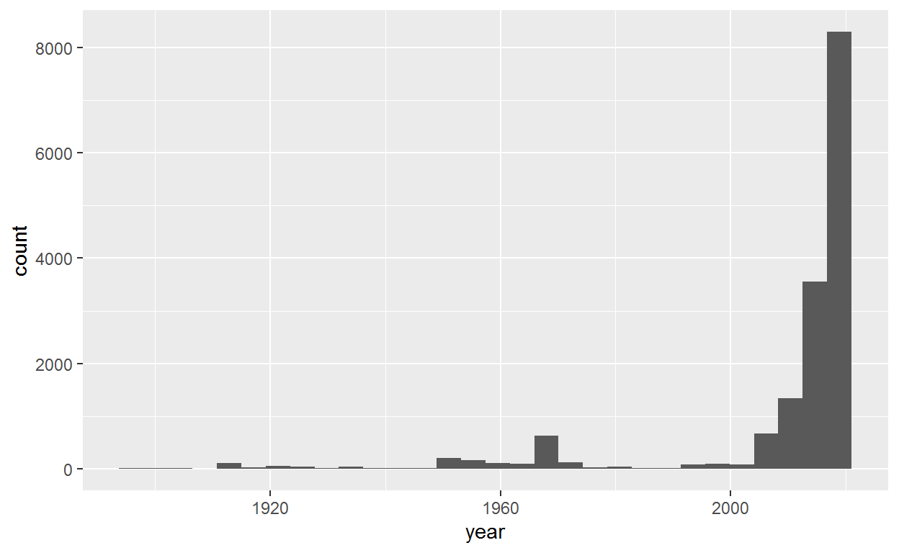
El componente ggplot(dat_input) determina la tabla de datos de la cual obtendremos las variables. Esta función también crea la página para el gráfico. El componente aes() hace referencia a la estética del gráfico, y aquí lo usamos para declarar que el eje x que corresponde a el año. Luego geom_histogram() declara el tipo de gráfico que se utilizará. En este caso se refiere al histograma.
Inténtelo de nuevo, pero esta vez ejecute cada línea por separado, verá que la primera línea hace un diagrama vacío, la segunda línea agrega un eje x, la tercera línea agrega los datos.
Aquí hay otro ejemplo:
ggplot(dat) +
aes(x = longitude, y = latitude) +
geom_point()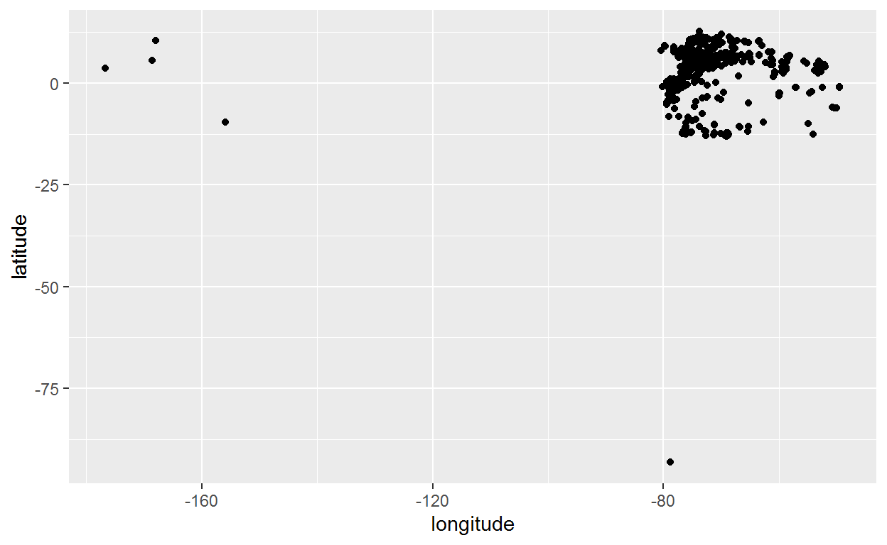
En este ejemplo, podemos ver que hay unos puntos que se comportan como outliers.
Ejercicio
Utilice las funciones aprendidas hasta ahora para eliminar o corregir estos datos.
Una vez ha corregido estos datos, vamos a graficar de nuevo los puntos pero esta vez con los datos corregidos y coloreándolos de acuerdo a su país de origen. Para ello, incluya el argumento “color = country” dentro de aes()
ggplot(dat_input) +
aes(x = longitude, y = latitude, color = country) +
geom_point()Agrupación y resumen de datos
Para este ejercicio, vamos a utilizar un nuevo dataset que contiene los registros de mamíferos de Colombia en el SIB.
dat_mamm<-read.csv("mamiferos_COL_GBIF.csv")Ejercicio
Utilice algunos de los conceptos aprendidos hasta ahora para explorar la información contenida en esta tabla. Revise si puede eliminar alguna columna o columnas duplicadas.
Además, identifique el Número de filas, el Número de columnas y los tipos de datos.
Ahora genere una gráfica de puntos en donde el eje x corresponde a la longitud, el eje y a la latitud y los puntos se encuentran coloreados por región.
ggplot(dat_mamm,
aes(x = longitude, y = latitude, color = as.factor(region))) +
geom_point()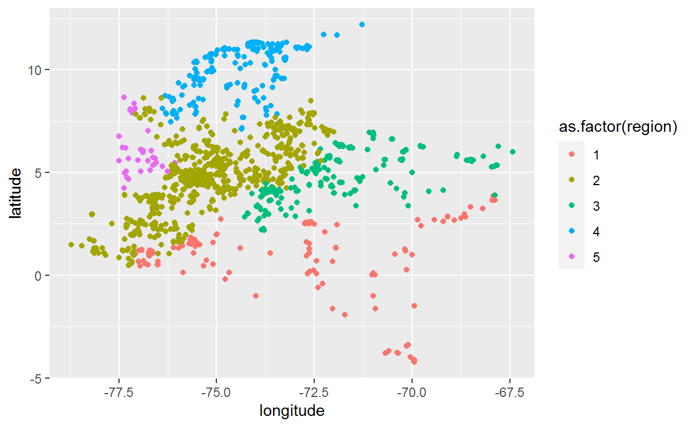
Presentar los datos en forma de gráficos es importante, pero ver los números concretos también puede ser útil. Supongamos que queremos identificar la elevación promedio y la desviación estandar a la que han sido recolectados los registros, así como el número de registros por departamento.
Para hacer esto, vamos a agrupar los datos con la función group_by seguida de summarize para obtener las estadísticas en cada departamento.
datg <- group_by(dat_mamm, NAME_1)group_by() toma una tabla existente y la convierte en una tabla agrupada donde las operaciones se realizan “por grupo”. Revise el objeto datg y verá que los datos en sí mismos no han cambiado. Sin embargo, si escribe datg en la consola, imprimirá, Groups: NAME_1 [31], lo que indica que los datos están agrupados en 31 departamentos.
Ahora podemos utilizar esa tabla para resumir los datos con las estadísticas deseadas
# A tibble: 31 x 4
NAME_1 mean_elev sd_elev n
<chr> <dbl> <dbl> <int>
1 Amazonas 104. 35.4 68
2 Antioquia 990. 807. 151
3 Arauca 290. 299. 67
4 Atlantico 78.2 71.7 44
5 Bolivar 438. 410. 99
6 Boyaca 1742 1068. 92
7 Caldas 1435. 938. 159
8 Caqueta 427. 343. 119
9 Casanare 475. 507. 126
10 Cauca 1421. 711. 118
# ... with 21 more rows
# i Use `print(n = ...)` to see more rowsPara ejecutar varios pasos como los anteriores, podemos usar la función %>%, la cual permite utilizar el resultado de una función como el primer argumento del siguiente. Por ejemplo, estas líneas de código hacen lo mismo:
Las función %>% es útil para encadenar operaciones de varios pasos en tablas. Para la mayoría de las funciones compatibles con %>%, el. ni siquiera es necesario, lo que hace que nuestro código sea aún más fácil de leer.
Aquí calculamos la desviación estándar y media de la elevación para cada departamento, así como el número de filas (registros) n () para cada departamento:
Ahora vamos a graficar la media y la desviación estándar de la elevación por departamento
dat_mamm %>%
group_by(NAME_1) %>%
summarize(mean_elev = mean(elevation),
sd_elev = sd(elevation),
n = n()) %>%
ungroup() %>%
ggplot(aes(x = NAME_1, y = mean_elev)) +
geom_linerange(aes(ymin = mean_elev - sd_elev, ymax = mean_elev + sd_elev)) +
geom_point()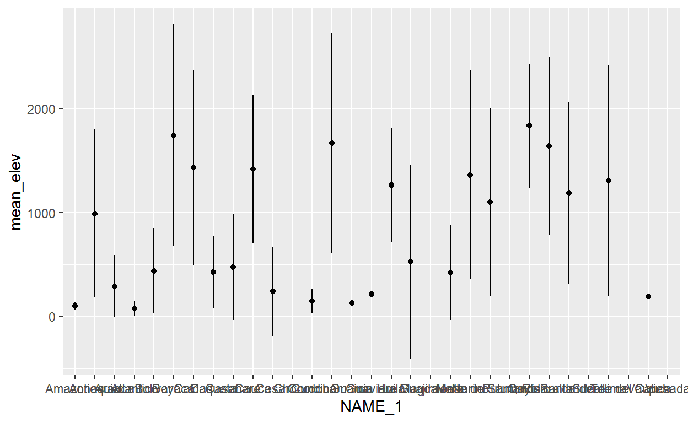
Ejercicio
Repita el gráfico anterior pero esta vez utilice únicamente los registros del orden Chiroptera para resumir los datos por región
dat_mamm %>%
filter(order == "Chiroptera")%>%
group_by(region) %>%
summarize(mean_elev = mean(elevation, na.rm = T),
sd_elev = sd(elevation, na.rm = T),
n = n()) %>%
ungroup() %>%
ggplot(aes(x = region, y = mean_elev)) +
geom_linerange(aes(ymin = mean_elev - sd_elev, ymax = mean_elev + sd_elev)) +
geom_point()
Creación de plots para publicaciones
Supongamos que ahora queremos visualizar la distribución de registros a través del tiempo. Además, queremos ver la incidencia de diferentes técnicas de muestreo en el registro de especies. En primer lugar, necesitamos contar los registros por año.
Ejercicio
Utilice las funciones group_by, summarize y filter para contar los registros de mamíferos por año desde 1950 por cada técnica de muestreo (basisOfRecord)
Ahora podemos graficar los datos agrupando por técnica de muestro
Añadir una línea en que muestre el año con más registros
p2<-p1 +
geom_vline(xintercept = 2015,colour="black", linetype = "longdash")
p2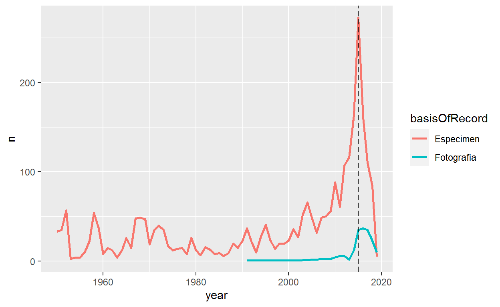
La función anotate() nos permite añadir texto en ubicaciones específicas de nuestro gráfico
p3<-p2 +
annotate("text", label = "2015", x = 2016, y = 300, size = 4, colour = "black")
p3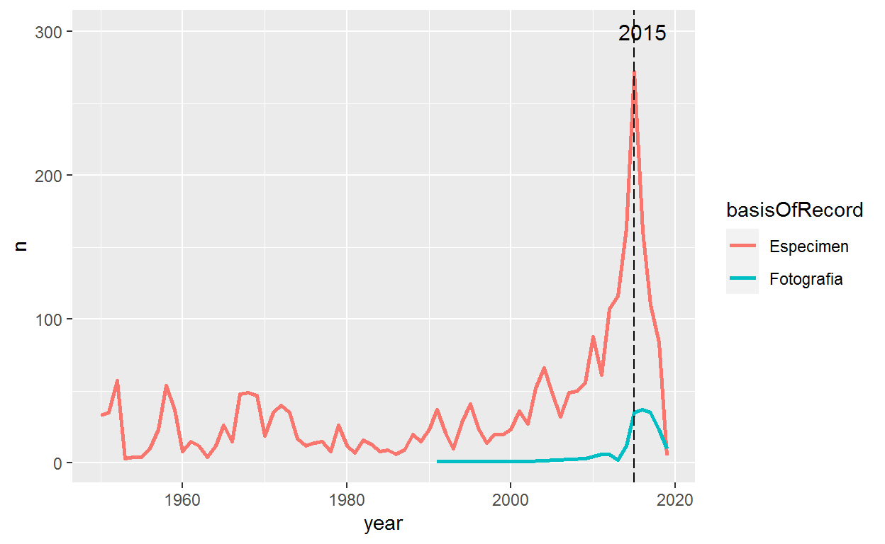
Finalmente, podemos cambiar el tamaño del texto de los ejes
e1<-p3 +
theme_bw()+
theme(legend.position = "bottom",
legend.title = element_blank(),
legend.text = element_text(size = 14),
text = element_text(size = 14),
axis.text.x = element_text(size = 12),
axis.text.y = element_text(size = 12))+
ylab("# registros")+
ggtitle("Número de registros de mamíferos")
e1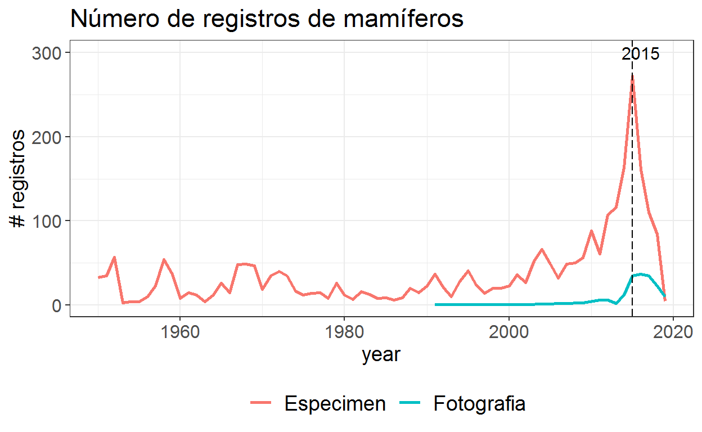
Ejercicio
Utilice las funciones group_by, summarize para contar los registros de los órdenes “Chiroptera”,“Primates”,“Rodentia”,“Carnivora” y “Perissodactyla” por cada técnica de muestreo (basisOfRecord)y por año desde 1950
Para resolver este ejercicio, es importante conocer el siguiente operador:
%in%
Este operador significa “dentro de” y le permite seleccionar seleccioniar todos los registros que se encuentran dentro de un conjunto de datos específico.
Por ejemplo, si desea seleccionar todos los registros que fueron recolectados en 1960,1990, 2000 y 2010, puede utilizar el operador %in% de la siguiente manera:
Guarde el resultado como un objeto, por ejemplo “dat_year_ford”
Ahora podemos crear un gráfico de barras que muestre la proporción de registros por órden y año. Para ello, utilizaremos el argumento, position = fill
p1<-ggplot(dat_year_ford, aes(fill=order, y=n, x=year)) +
geom_bar(position="fill", stat="identity")
p1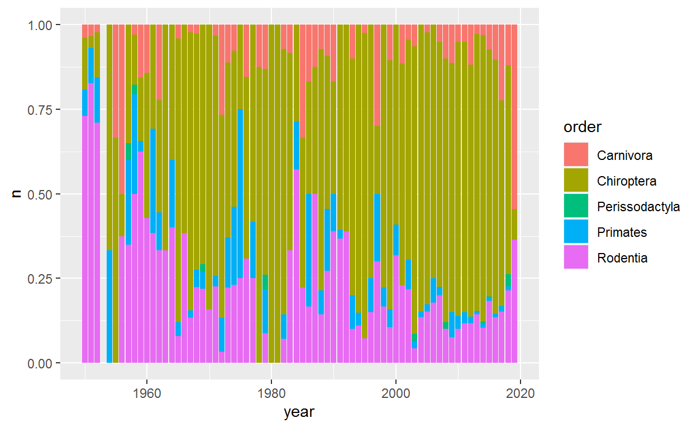
En este punto podemos arreglar un poco la estética de nuestra figura
Para ello, podemos utilizar diferentes paletas disponibles en la función scale_fill_brewer(). Puede ver las paletas disponibles acá:
http://rstudio-pubs-static.s3.amazonaws.com/5312_98fc1aba2d5740dd849a5ab797cc2c8d.html
En este ejemplo, utilizaremos la paleta “Set2”
p1 +scale_fill_brewer(palette = "Set2")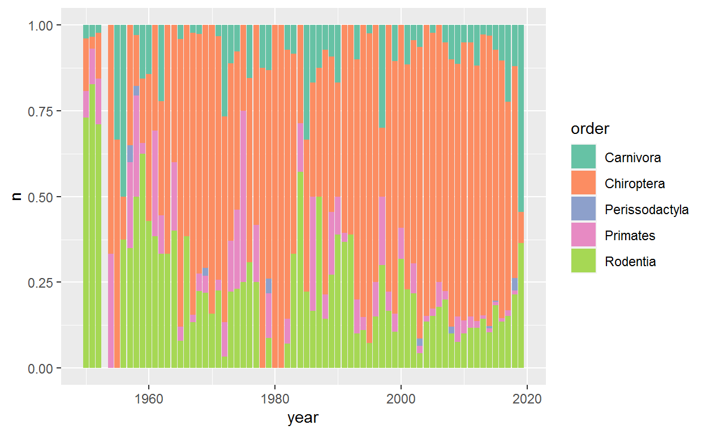
Pero si no estamos convencidos que estos son los mejores colores para nuestra figura, podemos utilizar la función scale_fill_manual() y crear un vector con los colores que queremos. Un buen recurso para definir colores es https://colorbrewer2.org/#type=sequential&scheme=BuGn&n=3
p2<-p1 +scale_fill_manual(values
=c('#d7191c','#fdae61','#ffffbf',
'#abd9e9','#2c7bb6'))
p2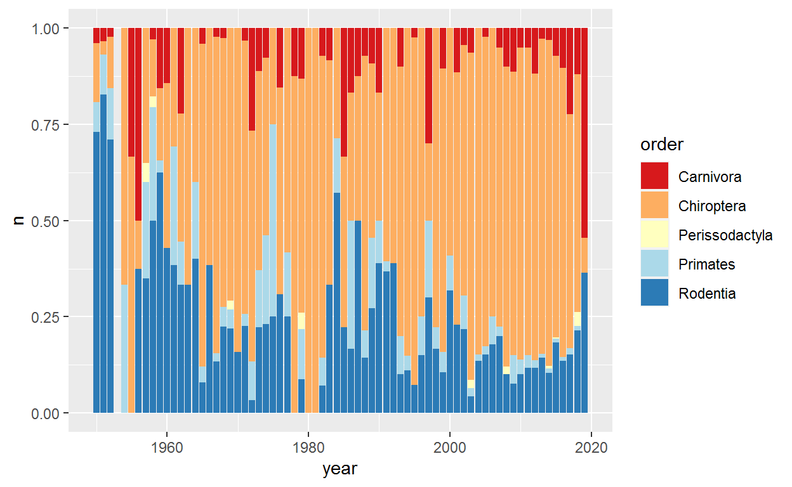
Ahora podemos ajustar otros aspectos de nuestro gráfico tales como el título, el fondo y las etiquetas de los ejes. Note como podemos cambiar la posición de la leyenda.
p3<-p2 +
ggtitle("Proporción de registros para cinco órdenes de mamíferos desde 1950")+
xlab("Año")+
ylab("# de registros")+
theme(legend.position="bottom",legend.box = "horizontal")
p3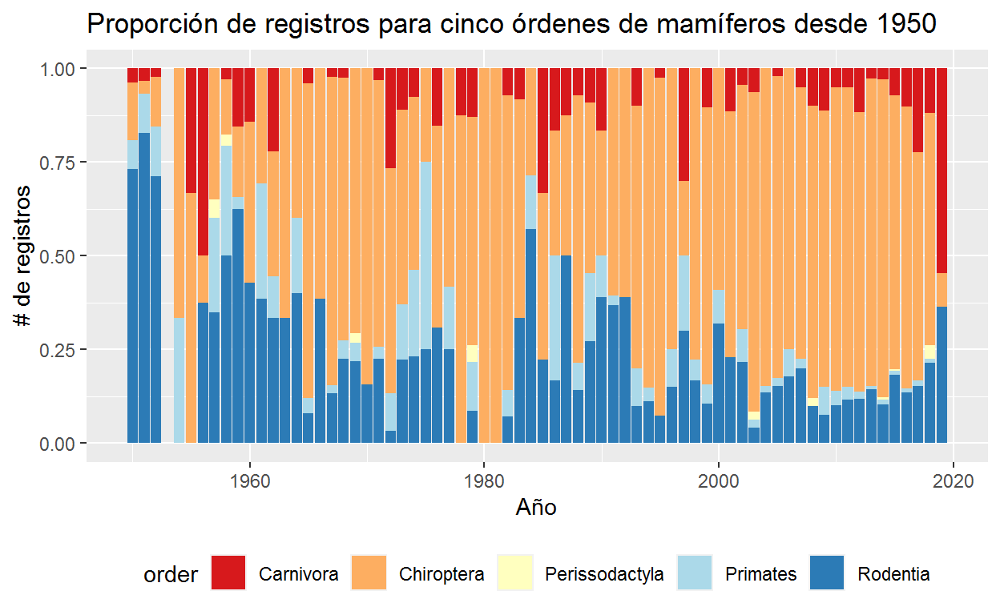
Podemos añadir más elementos para personalizar nuestro gráfico
p4<-p3+
labs(tag = "a")+#añade una letra para identificar el gráfico
theme(panel.border = element_blank(),#no bordes
panel.background = element_blank(),#fondo blanco
#formato del título
plot.title = element_text(size = 14,
family = "Tahoma",
face = "bold",
hjust = 0.5),
text=element_text(family = "Tahoma"),#Fuente de las etiquetas
axis.title = element_text(face="bold"),#Negrilla en los ejes
axis.text.x = element_text(colour="black", size = 11),
axis.text.y = element_text(colour="black", size = 9),
axis.line = element_line(size=0.5, colour = "black"),
plot.tag.position = "topleft"
)
p4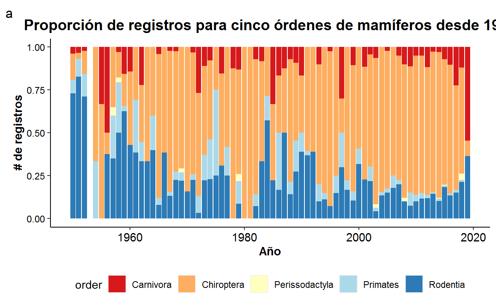
En dado caso de que desee cambiar la secuencia de números en el eje x, podemos utilizar la función scale_x_continuous(). En este caso, el argumento breaks usa la función seq(), la cual genera una secuencia de números entre un intervalo definido. En este sentido, la siguiente secuencia:
seq(0,175,25)[1] 0 25 50 75 100 125 150 175se puede leer como “crear una secuencia de números entre 0 y 175, cada 25 números.
Aplicando este principio, podemos cambiar las divisiones en el eje x de la siguiente manera:
p5<-p4+
scale_x_continuous(name = "Año",
breaks = seq(1950, 2020, 5),
limits=c(1950, 2020))
p5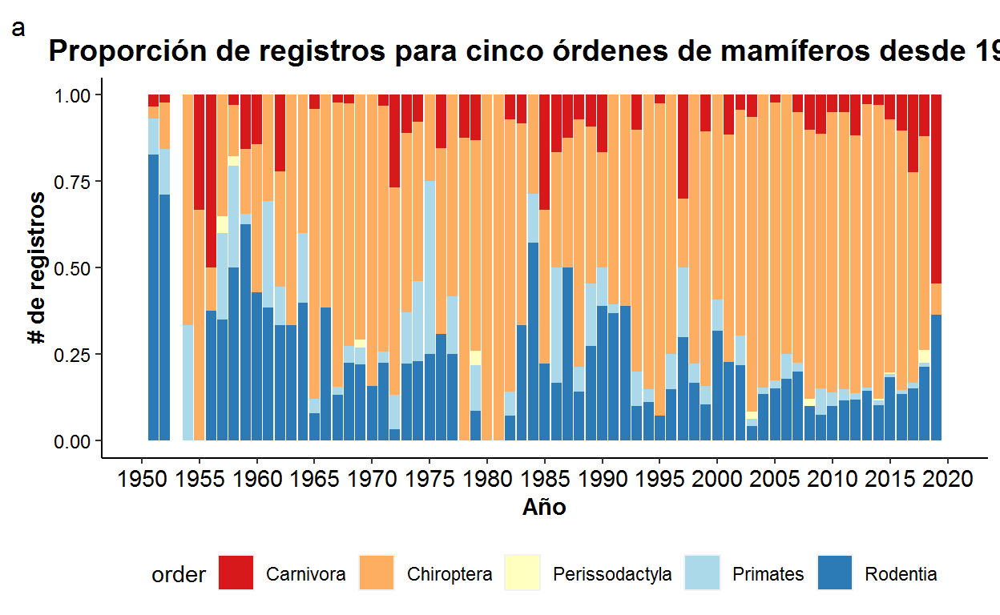
Finalmente, podemos combinar los dos plots. Para ello, utilizaremos el paquete gridExtra
library(gridExtra)
fp<-grid.arrange(e1, p5, nrow = 2, ncol = 1,
layout_matrix = rbind(c(1,1),c(2,2)))fpTableGrob (2 x 2) "arrange": 2 grobs
z cells name grob
1 1 (1-1,1-2) arrange gtable[layout]
2 2 (2-2,1-2) arrange gtable[layout]Ejercicio
¿Cuáles cambios haría para hacer las gráficas estéticamente más agradables? ¿Cómo combinaría tres gráficos dentro de una misma figura?
¡Hemos llegado al final del día 1! Los conceptos aprendidos el día de hoy serán fundamentales para sacar el mayor provecho en el segundo día. Es hora de descansar :)